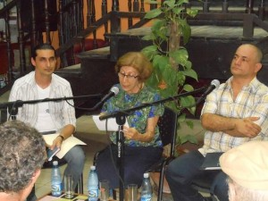
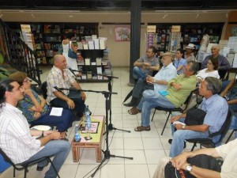

Von: Camilo García Lopez-trigo


“Es una imagen poética muy bonita, porque la poesía representa eso: un aire de luz”, nos explica Basilia al indicar que tomó esa frase prestada de un antología realizada por Alberto Garrandés, a partir de una idea del novelista cubano José Lezama Lima.
“Nuestro desafío es tratar de que sobreviva la poesía” –dijo– frente a las voces que la consideran un género en decadencia y otras que declaran la muerte de la literatura en general ante el avance de las nuevas tecnologías. “Pero nosotros resistimos y seguimos haciendo poesía”, reafirmó.
En los 11 años que lleva realizando este encuentro, dice que es imposible identificar un momento de mayor satisfacción: “todas las sesiones han tenido su interés”. Como la que realizó el pasado jueves 5 de junio, compitiendo con el bullicio de la calle, al atraer bastante público para presentar a los jóvenes escritores Lázaro Castillo y Yamil Díaz. Al leer sus poemas, ambos transmitieron –cada uno con su estilo– ese vínculo entre sentimientos y expresión que sólo la poesía puede brindar.


El propio Lázaro explicó después la razón de esa síntesis conceptual y la brevedad de sus poemas, pues prefiere “textos muy sintéticos para expresar sentimientos y experiencias, no pensando en el estilo sino en la propia inspiración”. En el intercambio con el público presente se dio la oportunidad de conocer en detalles su trayectoria artística, desde las primeras décimas y sonetos –que no quiso mostrar a nadie, en su adolescencia– hasta el poeta que ha devenido en la actualidad.
Lázaro Castillo nació en Yaguajay, provincia de Sancti Spíritus, in 1974. Es poeta y crítico, ha publicado varios libros, als Negar cualquier complicidad, Biografía sucia, A la entrada de la noche und La vida breve. Ha obtenido los premios Fayad Jamís y Casatintas y fue dirigente de la Asociación Hermanos Saíz. Actualmente es miembro de la UNEAC y labora en su secretariado.
Andererseits, al presentar a Yamil Díaz, Basilia resaltó que “quiere incorporar en sus versos no solo sus vivencias personales, subjetivas y de los hechos de su entorno social, sino también todos los elementos de la historia cultural que lo atraen, lo han marcado y ha atesorado en su memoria durante toda su vida y ya forman parte de su ser. De esta manera su poesía asume el difícil riesgo de hacerlos coexistir y hasta fusionar en un mismo libro, lo que es siempre un verdadero desafío estético.”
Tras leer varios de sus poemas, y ante una pregunta del público, explicó el proyecto que aún tiene en planes de editar un libro de décimas cubanas con temas eróticos. Indicó que el libro se llamará Decimerón, del cual ya tiene seleccionados alrededor de 300 textos, entre los que han sido publicados y otros que provienen de la oralidad. Aunque será muy humorístico –por su vínculo tan cercano al doble sentido–, aclaró que se trata de un proyecto muy serio y recordó varios de ellos, que hicieron reír a los asistentes.
Yamil Díaz Gómez nació en Santa Clara en 1971, donde actualmente reside. Es escritor, editor y periodista y ha publicado los libros Apuntes de Mambrú, En el buzón de jardín und La guerra queda lejos. Ha obtenido premios como el Ciudad de Santa Clara y Eliseo Diego y reconocimientos por su labor editorial y de crítica.
Dos poetas y un espacio que se renueva cada vez con la presentación de jóvenes escritores. En esta ocasión, a Basilia le llamó la atención la presencia de personas que no participan habitualmente y “acercarle la poesía a ellos es algo muy bonito”, confirmó. Por eso es vital mantener ese aire de luz, como llamado de resistencia para la poesía en las más recientes generaciones.